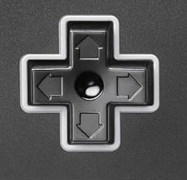
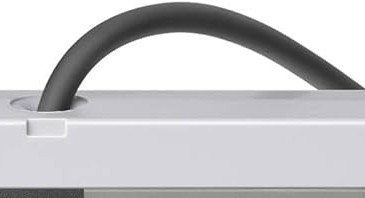
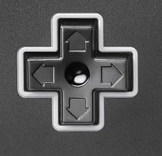
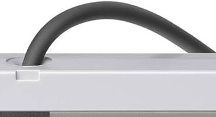

A smash hit for this christmas season!

Now your playing with POWER!
Specs
Powered by an 8 bit processor with support of over 54 vibrant colors! smooth scrolling backgrounds and a crisp clean dedicated 5 channel sound engine it feels like your playing inside the game!

Graphics
The new nintendo entertainment system packs a whallop of a punch compared to its competition! you wont get these kinds of graphics anywhere else!

Controller

Introducing the NES controller, the next evolution of game controller. Engineered for effortless play, its perfectly balanced design, responsive buttons, and unmistakable feel deliver a level of control that keeps players coming back.
 



Sound
Experience for the first time from Nintendo, crisp melodies, punchy basslines, and every note in between, engineered for crisp high-quality sound. The NES sound chip brings your favorite games to life with rich, immersive audio, from music to satisfying sound effects, delivering the next evolution of timeless gaming experience."